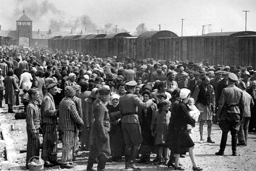

What is a crime against humanity?

A crime against humanity can be defined by a serious act committed on a group of people, including persecution,
imprisonment, torture and other inhumane acts. It targets various groups, ranging from ordinary civilians to
people defined by their ethnicity, beliefs, or sexual orientation, and is mostly carried out by state authorities.
The idea of crime against humanity developed gradually, but it became clearly defined after the events of WW2, and more
particularly after the Holocaust. The term was used during the Nuremberg trials (1945-1946), where Nazi
officials were judged for their participation in the exterminations of citizens and Jews. This event was the first time
individuals were held responsible for a large-scale crime. After this, the idea continued to develop through agreements,
such as the Genocide Convention in 1948, which put genocides as a must-punish crime by the states, and the Universal
Declaration of Human Rights the same year, where individuals had a reinforced protection against abuses.
In 1998, the Rome Statute treaty established the International Criminal Court (ICC).
In this tribunal, crimes including genocides, crimes against humanity, war crimes and crime aggression were judged.